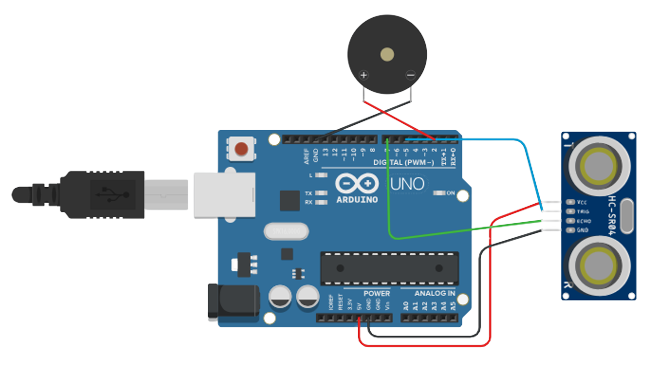
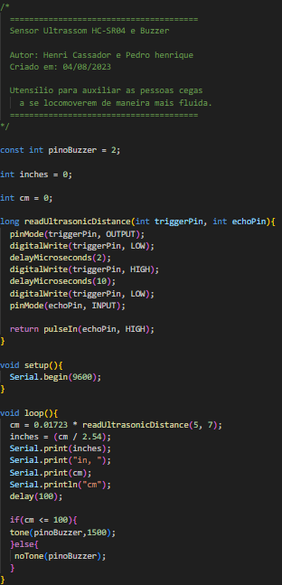
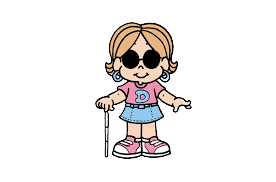

Projeto do Grupo:
Sensor:
Componentes:
- • Sensor HC-SR04
- • Buzzer
- • Jumpers
- • Arduíno
---------------------------------------------
Código do Sensor:


Como Funciona o Sensor:
O sensor é extremamente simples de ser compreendido. Quando um objeto se aprixima em uma distância de 1 metro do mesmo, um
sinal sonoro é emitido indicando à pessoa de que algo se aproxima.
Dessa forma, é possível que, além da proteção que o bastão transmite, torne-se maior o cuidado e a proteção das pessoas cegas.